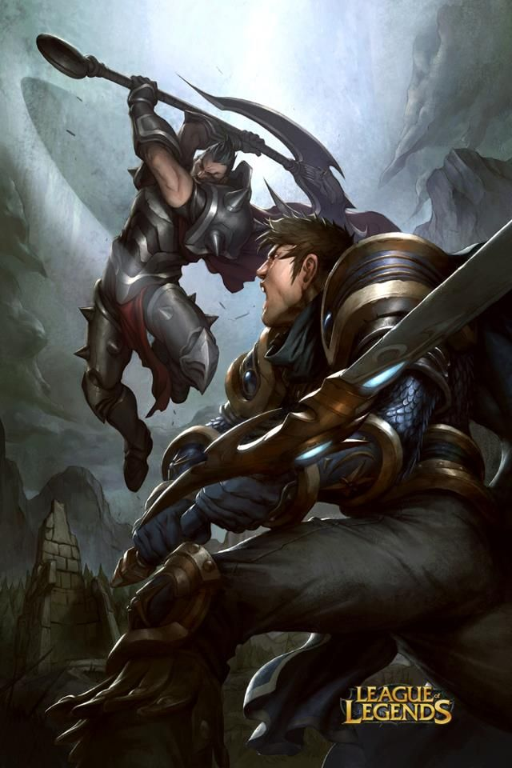

La top lane como muchos sabran es la mas larga del juego ,un sitio en el que el mas pequeño error puede costarte toda una oleada de minions o aun peor una torre.En esta linea los ganks no son muy frecuentes asi que sera un uno contra uno donde el ganador sera el que mas habilidad tenga ya que una pequeña ventaja sobre el rival puede conllevar a llevarte una torre y varias kills.Como se consigue esta ventaja ,NO TIRANDOSE HASTA ABAJO DE LA TORRE POR UNA KILL ...mas bien con el farmeo y agarrado de la mano con el viene el control de lineas, asi que en este apartado vamos a hablar sobre el farmeo en la linea , como zonear , como frezzear y como pushear la linea y en que momento se deve hacer cada cosa. 
Se denomina pushear a la accion de matar minions mas rapido que el contrario por lo que tu linea avanzara hacia adelante.Cuales son las ventajas de hacer esto ? bueno una de las ventajas es que subes de nivel antes que e contrario con lo que a nivel 2 o 3, pero pushear tambien tiene desventajas, como el freezeo de linea enemiga y consecuentemente perdida de oro o vida y que al estar avanzado en la linea eres vunerble a un gank del jg contrario.